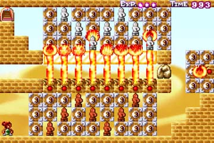
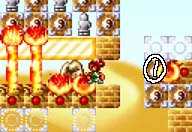
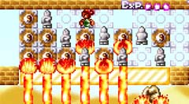
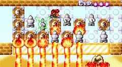
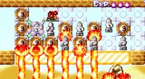
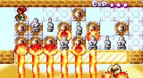

配置は面白そうな面。
|  | 3-7 黒 パッと見面白そうに見える面ですが、 |
攻略の流れ
 |
まず、岩ブロックの置き場所ですが、 図の位置に配置します。 マル1のブロックを一瞬消したあと、 手作業で岩の位置を動かしてください。 |
 |
その後、図の位置までは問題なくいけると思います。 この先は力技で強引に突破します。 かっこいい抜け方があれば、いい面になるのになぁ |
 |
まず奥のブロックを、消しておきます。 次に手前側の埴輪を連続で斬りつけつつ、タイミングを計り… |
 |
奥の埴輪を斬りつけます。 直後、一気に左に抜けてください。 でも一番苦労したのは、この瞬間のスクショをとることでした…。 パッドを握りつつ、ゲームをプレイしながら、 小指でPrintScreenを…。 |
 |
抜けたぁ・・・！ |
リクエストがあったら白も攻略します。